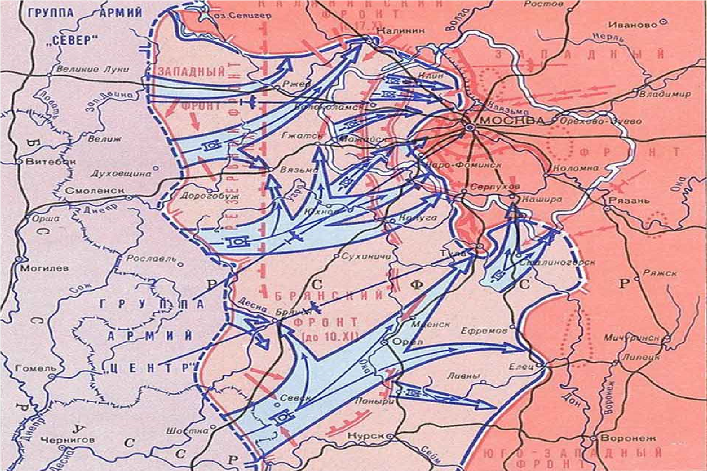
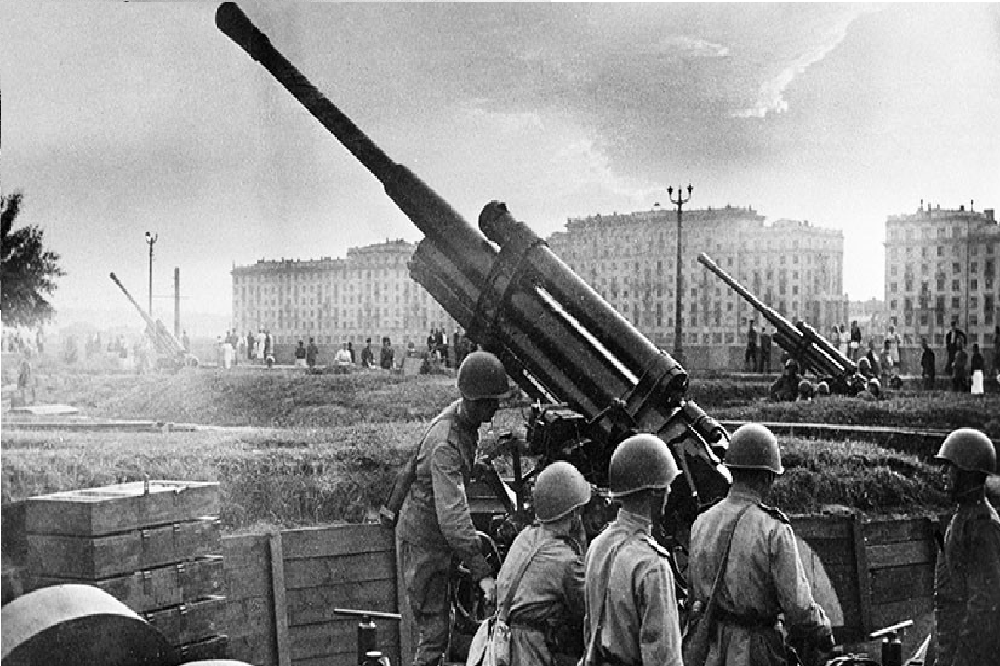
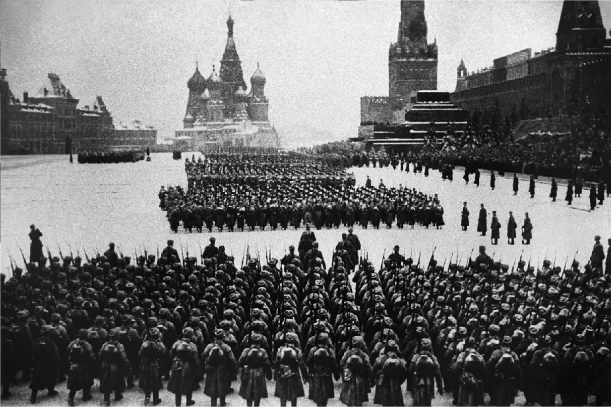

1942
ПодробннеНа момент начала битвы немецкие войска, продвинувшись далеко вглубь советской территории, достигли подступов к Москве. Операция "Тайфун", начавшаяся 30 сентября 1941 года, имела целью окружение и уничтожение красноармейцев, защищающих столицу. К ноябрю немецкие войска подошли к Москве на расстояние 30-40 километров. Однако несмотря на начальные успехи, армия Германии столкнулась с рядом сложностей. Военные расчеты немецкого командования оказались ошибочными: они недооценили способность советской армии к организованной защите и контратаке, а также трудные погодные условия, которые значительно ухудшили ситуацию. К этому времени советское командование под руководством Георгия Жукова смогло организовать оборону и сконцентрировало в районе Москвы значительные силы. С началом декабря 1941 года советские войска перешли в контрнаступление. 5 декабря началась операция "Уран", в ходе которой они нанесли удар по флангам немецких войск. Это контрнаступление стало поворотным моментом битвы. Хотя погода была крайне суровой, а многие солдаты сражались без должной экипировки, советские войска использовали численное преимущество и стратегическое планирование, чтобы нанести серьезный урон врагу. |
 |
|  |
К январю 1942 года, после нескольких недель ожесточенных боев, немецкие войска начали отступать. Битва за Москву закончилась победой советской армии и стала первым крупным поражением вермахта во Второй мировой войне. Эта победа укрепила моральный дух советских солдат и населения, ознаменовав начало стратегической инициативы на Восточном фронте. |
В общей сложности в битве участвовало более 3 миллионов солдат и было использовано множество танков и авиации. Битва за Москву положила начало сопротивлению советских войск. |
 |